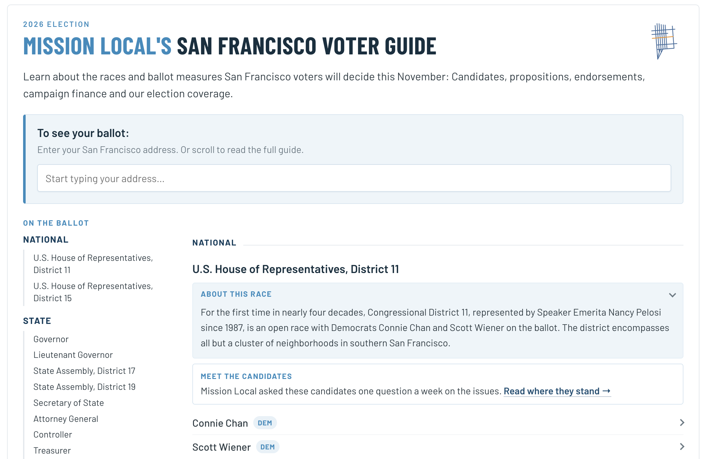

Voter guide · Oct. 2026
2026 San Francisco Voter Guide
Mission Local's guide to the November 2026 ballot, covering candidate background and stances, propositions and endorsements. Readers can enter their San Francisco address to see their own ballot, or scroll through the full guide. View project here.
- Built in
- HTML, CSS, JavaScript, Mapbox
- Role
- Design, development, reporting